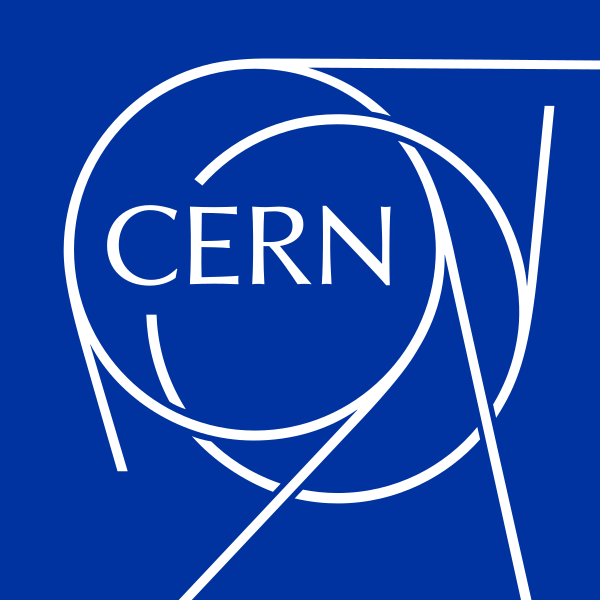

CERNCERN's accelerator-control software is ~15 million lines of Java, built over 18 years by nearly 300 developers. This is how CERN uses Sourcegraph universal code search to keep technical debt in check where every change is mission-critical.
Before Sourcegraph, CERN's tooling couldn't do precise, semantic searches for how and where a specific method was used. The result? Teams weren't making necessary changes because they couldn't measure the blast radius of a planned API change across the huge codebase.
Meanwhile, valuable code was being reinvented: utility methods, deprecated API usage, and general-purpose logic hidden inside specific projects duplicated over and over.
The LHC runs for five years straight. Software must stay stable, so CERN makes small, backward-compatible changes — and Sourcegraph ensures one team's change never breaks dependent code written by someone else.
During upgrades, developers make more radical changes. Sourcegraph reveals redundant code (like duplicate utility methods) and lets teams assess the cost/benefit of breaking API changes before committing to them.
Developers find code that already exists and repurpose it, avoiding duplication and saving countless hours of redoing finished work.
Search "understands" code structure instead of seeing raw text, so results are accurate even in a 15M-line codebase.
Teams find usages of deprecated APIs and non-API library code so they can be consolidated and cleaned up.
Library owners see exactly how other developers use their API, so decisions about its future are educated, not guesswork.
“Sourcegraph helps us with technical debt reduction by letting us avoid duplication, spot the usage of deprecated APIs, and identify general-purpose code that can be factored out and shared in a core library.”
When ~300 people share 15M lines of mission-critical code, the difference between "I think it's safe to change" and "I know exactly what it touches" is the difference between physics research and downtime.
Read the full case study on sourcegraph.com →